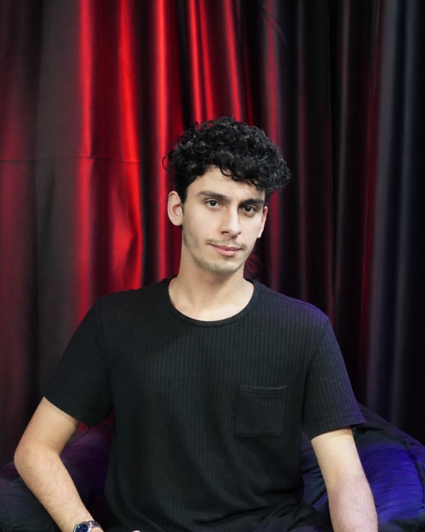

Pedro Amaral
Ator, dramaturgo, apresentador e produtor. Nascido em Santos e radicado em São Paulo, é bacharel em atuação pelo Célia Helena Centro de Artes e Educação, onde também se pós-graduou em Dramaturgia e Roteiro.
Fundou o FOYER em 2023, com Isabel Branquinha, e dirige a redação desde então.
Cobre o dinheiro que move a cultura: quanto custa montar um espetáculo, de onde vem o financiamento, como anda a bilheteria e o que o mercado de cinema e streaming faz com o que nasce no palco.
14.082026